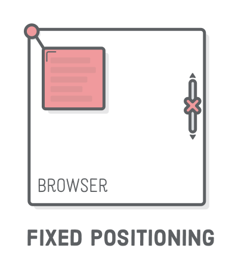

Позиционированные элементы
По умолчанию элементы на странице располагаются слева направо и сверху вниз. А
как сделать надпись на изображении товара, показать один элемент поверх другого
при ховере или заставить меню всегда быть прикреплённым к верхней части вьюпорта
даже при скроле? Для решения подобных задач есть свойство position,
позволяющее буквально приподнять элемент и разместить его поверх любого другого.

Статическое позиционирование (static) это исходное состояние всех элементов
веб-страницы. Блочная модель и флексбокс располагают элементы именно в этом
статическом потоке страницы. Относительное (relative), абсолютное (absolute)
и фиксированное (fixed) позиционирования позволяют приподнять элемент над
потоком страницы и вручную его позиционировать, используя систему координат,
начало которой зависит от типа позиционирования.
Подавляющее большинство элементов должно быть размещено в соответствии со стандартным статическим потоком страницы. Другие схемы позиционирования используются для декоративных эффектов и в случае, когда спозиционировать по-другому невозможно.
Свойство position
Изменяет тип позиционирования элемента. По умолчанию задано значение static.
Для указания положения элемента используются свойства top, left, bottom
или right, которые неприменимы к элементам без position.
position: static | relative | absolute | fixed | sticky | inherit
Элемент, значение свойства position которого отличается от static, называется
«позиционированный элемент».

Относительное позиционирование
При относительном позиционировании элемент остаётся в потоке страницы, то есть соседние элементы не занимают его место. Тем не менее, визуально элемент можно сдвинуть относительно его оригинального положения, при этом он может перекрывать соседей.

Свойства top, left, bottom и right позволяют указать смещение элемента
(визуальное) относительно его исходного положения. Могут принимать отрицательные
значения.

Само по себе относительное позиционирование не используется из-за того, что элемент не вырывается из потока страницы, продолжая занимать место. Используется только в связке с абсолютным позиционированием.
Создадим три блока. Среднему div.relative установим относительное
позиционирование и визуально сместим его вправо и вниз относительно начального
положения.
Абсолютное позиционирование
При абсолютном позиционировании элемент вырывается из потока страницы, то есть
соседние элементы занимают его место. Отсчёт значений top, left, bottom и
right для абсолютно позициоинированного элемента ведётся относительно
ближайшего предка с позициоинированием отличным от статического. Если такого
предка не окажется, то отсчёт будет произведен от границ элемента <body>.
Само по себе абсолютное позициоинирование не очень полезно, и используется, например, в связке с относительным для декоративного позиционирования элементов. То есть, элемент «абсолютно» позициоинируется «относительно» какого-то своего предка, который находится в потоке страницы.

Тогда значения top, left, right и bottom, для абсолютно
позиционированного элемента, отсчитываются от границ этого предка, а не от
<body>. То есть, задание position: relative предку используется с
единственной целью - заставить абсолютно позиционированный элемент располагаться
относительно этого предка.
Запись bottom: 20px означает расстояние между нижней границей относительно
позициоинированного предка и нижней границей абсолютно позициоинированного
элемента. Аналогично работают right, left и top - задаётся расстояние
между одноимёнными сторонами предка и элемента.
Создадим три блока с изображением и текстом в каждом. Зададим div.thumb
относительное позиционирование, а p.label абсолютное, чтобы можно было
поставить текст поверх изображения в этом блоке. Не забываем убрать у p.label
внешний отступ (margin), так как он влияет на смещение самого элемента, но не на
другие элементы в потоке.
Если не задать div.thumb относительное позиционирование, то все три p.label
окажутся в верхнем правом углу окна, так как значения top и right будут
отсчитываться относительно элемента <body>.
Фиксированное позиционирование
При фиксированном позиционировании элемент изымается из потока страницы и позиционируется относительно вьюпорта (окна браузера). Это создает эффект фиксации элемента в определённом месте экрана при прокрутке страницы.
Фиксированное позиционирование используется для закреплённых хедеров с навигацией, всплывающих окон, чатов с менеджером на страницах интернет-магазинов и т. п.
Создадим кнопку чата с менеджером button.chat-button и поместим её в нижний
правый угол вьюпорта. При прокрутке страницы кнопка остаётся на месте, потому
что у неё фиксированное позиционирование.
Липкое позиционирование
Липкое позиционирование (sticky) это как будто комбинация свойств relative и
fixed. Для начала посмотрите на иллюстрацию, на которой липкое
позиционирование задаётся элементам с буквами A и B, так сразу будет
понятно.

- Пока элемент находится в своём контейнере и контейнер не покидает область видимости при вертикальной прокрутке - элемент ведет себя как будто позициоинирован относительно (relative).
- Как только часть родительского контейнера покидает область видимости, элемент фиксируется на странице до тех пор, пока хотябы какая-то часть контейнера есть на экране.
- Если весь контейнер покинет область видимости, то опять включится поведение как при относительном позиционировании - элемент исчезнет с экрана вслед за контейнером.
Для реализации липкого позиционирования необходимы всего три условия:
- Липкому элементу необходимо задать позиционирование
position: sticky. - У липкого элемента должно быть установлено положение, например
top: 0. - Элемент-контейнер должен быть больше по высоте, чем липкий элемент.
Заголовки секций в примере сделаны липкими, поэтому при прокрутке страницы, они будут «прилипать» к верху области просмотра до тех пор, пока видима какая-то часть их секции.